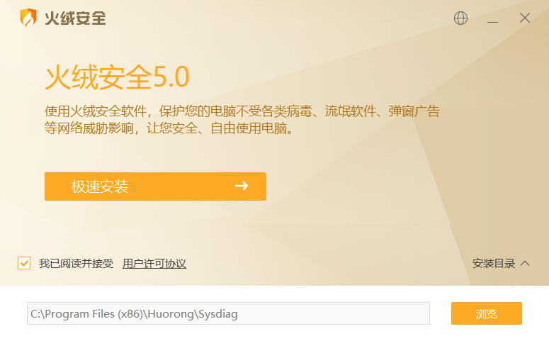
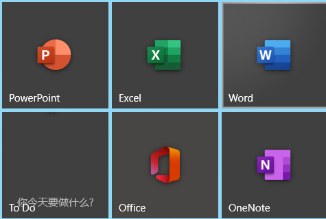

作者：explorer1120
我们在用电脑的过程中，经常会遇到一些流氓软件，今天小编就给大家介绍一下这些LM软件的替代品，绝对无广告，无捆绑！
如果你是win10用户，安全类软件其实根本就不用装，自带的windows defender足矣。
如果你是win7或win8.1用户(xp我就不提了)，你可以尝试这款“火绒安全软件”，安装的过程中没有任何捆绑软件，使用时也无广告，甚至会让你感受不到它的存在
什么也不说了，直接上截图

WPS的话想必非常明确，用Microsoft office替代即可
一般来说，windows 10的电脑都会预装office 2016，用微软帐号登录即可使用

但是如果没有的话，你可以按照如下方法安装↓
如果你想支持正版，你可以在office官网直接购买office 365(现在好像叫Microsoft 365了)
如果你暂时不方便，你可以安装白嫖破解的office，网上有教程
如果你只想用WPS又嫌广告太多，可以在卸载的界面选择“广告太多”，即可关闭广告23333
对了还有，你知道Word是最好用的pdf转docx工具吗？
如果你是Win10用户，请不要浪费了“微软拼音输入法”，不信你就继续往下看
第一步，打开设置>时间和语言>语言>中文>选项>微软拼音输入法>选项>词库与自学习
第二步，把所有复选框都打上对号
第三步，打开“专业词典”，把你想要选的都打上对号
然后就可以了
迅雷可以直接用咱们之前说过的IDM替代，下载地址
那如果暂时不方便怎么办呢？你可以试试这款免费的FDM!
如果你只有看本地视频的需求，推荐这款potplayer，下载地址截这里
如果你要看网络资源，你直接用网页版就可以了，何必要装软件呢？
而且chrome可以装“我要看VIP视频”扩展hh
如果你是chrome,edge,firefox,360或qq浏览器，你可以安装谷歌上网助手插件，然后使用google搜索
chrome安装方法:（其他浏览器可直接在插件商城搜索）
第一步：点击这里下载插件
第二步：解压出来
第三步：切换到chrome插件中心，将crx文件拖入chrome
第四步：安装成功！
然后你就可以访问google 搜索了